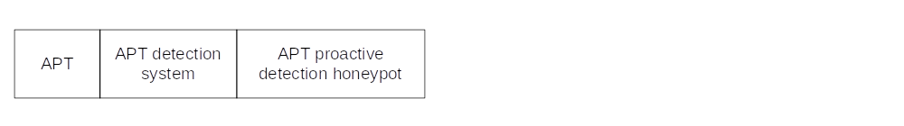

Honeypot roadmaps#
Web-based#

The in 2014 proposed Aggressive Web honeypot (Supeno Djanali et al.) is a low-interaction web honeypot equipped with obfuscated javascript code to detect cross-site scripting and SQL injection. The proposed framework is able to complement the limitation in the existing honeypot such as Glastopf, a low-interactive honeypot and HIHAT, a high-interactive honeypot.
The goal of the OWASP Honeypot Project is to identify emerging attacks against web applications and report them to the community, in order to facilitate protection against such targeted attacks. It is based around the earlier OWASP/WASC Distributed Web Honeypots Project.
A client honeypot is a honeypot that actively searches for malicious or compromised servers.
Worm detection#
Signature-based IDS is commonly included either as the main IDS or part of the IDS system.

The Aho-Corasick algorithm used in Zero-day polymorphic worms honeypot stands out from the crowd. The Aho-Corasick Algorithm can generate signatures even if not all the variant of the polymorphic worm is captured.
Bot detection#
The implementation of a bot detection honeypot can be for studying its origin or can be used to contain the DDoS attack and keep the real server free from it.

The Hybrid honeypot (Swapnali Sundar Sadamate) uses a client-server architecture. It consists of a server storing information collected by the honeypot, a honeypot to capture the attack information, a web-management interface and a threshold-based anomaly IDS system. The IDS system is implemented at the gateway of the network to detect the malicious traffic. The malicious packet is redirected to the honeypot. The honeypot is installed with sebek to record attacker behaviour, dionaea to collect the malware information and snort in the verification process to collect and analyse the packet received.
The ODAIDS-HPS honeypot (Rajalakshmi Selvaraj) consists of an outlier IDS to detect the DoS packet, attack classifier and honeypot. The IDS adopts distance of the nearest neighbour method and requires a set of pure normal data to train the system.
Honeytoken#
A honeytoken is a digital entity perceived to be valuable by an attacker. It can be as simple as an ID with a password or be as complex as a spreadsheet with believable customer information. Honeytokens are most useful in the context of anti-phishing and insider threat.

- How it should be constructed?
- Who is it for?
- What information to keep and what to change?
Maya Bercovitch et al. introduced honeygen for automatically creating complex honeytokens. The application has two difference modes which can be used to create the honeytoken. The first mode is an obfuscation mode where real data is used as input. This mode only changes the more sensitive values. The second mode is the generation mode. This mode creates the honeytoken from scratch based on given rules.
Advanced Persistent Threat#
APT attacks are often a slow process and hard to detect, especially when stealth techniques such as tunnelling are used.

The APT detection system (Roman Jasek) consists of high-interactive honeypots, low-interactive honeypots, honeypots for production and honeypot agents. A honeypot agent acts like a normal human user with behaviour to attract the attack. A low-interactive honeypot emits a known vulnerability into the network. A high-interactive honeypots allows the attacker to interact and compromise its system. The act of compromising the honeypot in the honeyfarm is recorded and monitored by the administrator. Safety rules are derived from the compromise and are applied to the production system.
The APT proactive detection system (Zainab Saud) architecture uses NIDS as a gateway to the server and low-interactive honeypot to emit data to attract the attacker. The focus of this system is to ensure that an administrator receives timely information on the intrusion when the honeypot is being compromised. The task of the NIDS is to provide a detailed picture of the attack, and its log and alerts can assist with analysis and correlating different events.
Interaction between attacker and defender is usually an incomplete information game in which defender and attacker are not sure of the type of other players. A Bayesian game may be a fitting model.
Dynamic#
Dynamic honeypots can automatically adapt to the environment they are in. Usually some fingerprint method is used to collect information about its environment. Active fingerprinting methods use techniques such as port scanning to collect information from the server.

Some dynamic honeypots are low-interactive honeypots, most likely for ease of configuration. For detecting unknown attacks those are not very effective.
Some, like the Sophisticated honeypot mechanism (Liberios Vokorokos), Dynamic and Hybrid honeypot (Kartik Chawda), and the Versatile virtual honeynet framework (Wenjun Fan) have both high and low-interactive honeypots in their architecture. The low-interactive honeypot is preconfigured to blend in with the network, and the high-interactive honeypot will contain, monitor and store the attack information. The latter adopted the virtual high-interactive honeynet, capable of analysing multiple malwares in parallel.
In current developments, applications such as Hadoop are used to cater for the huge amounts of network data. And attackers are always coming up with new ways of identifying and taking over honeypots. In this never-ending arms race, honeypots and how they are used must also be further developed.
This project solves some of the inherent limitations of honeypots by designing, building and evaluating a novel honeypot deployment concept leveraging cloud technologies. This new concept, a small, substantial contribution in the field, shifts the approach of deploying honeypots into the cloud.
AI#

RASSH (Adrian Pauna) is a low-interactive honeypot leveraging reinforced learning game theory. The Intelligent honeypot (Wari Zanoramy, Ansiry Zakaria) is high-interactive and uses a past similar case and solution and applies it to the current case to create the honeypot. The if-then rule stored in the database is used in the decision-making of the content in the honeypot (case-based reasoning and expert system).
These approaches were trained beforehand and did not learn from attacks. Enter DeepDig (DEcEPtion DIGging) (pdf).
Shadow#
Shadow honeypots take the concept of a traditional honeypot and enhance it by deploying a network of honeypots that are hidden behind the actual production systems. These shadow honeypots are designed to blend in with the rest of the network, making it difficult for attackers to distinguish between real systems and decoys.
Unlike traditional honeypots, which are designed to actively engage with attackers and potentially pose risks to the production environment, shadow honeypots are passive monitoring systems that do not engage with attackers. Instead, they are designed to blend in with the production environment as much as possible, with the goal of attracting malicious activity that might otherwise go undetected.

The Shadow honeypot (Anagnostakis Kostas) uses three different anomaly IDSs. If one IDS fails to detect an attack, the other may be able to detect it. The detection of malicious packet is based on knowledge of what constitutes normal packets. Configuring three detectors to an acceptable level of detection and the log delay for a packet to go through the three checks, could be somewhat time-consuming.
AIPS (Maros Barabas) attempts to detect attacks with signature datasets of abnormal behaviour with a single IDS. High memory usage and could suffer from high false positive rates.
I have not found many new developments for these types of honeypots.
Concealment#

Apate is a Linux Kernel Module for hardening High Interaction Honeypots. It works on a system call level, is able to log, block and manipulate these calls, and uses an easy to use yet powerful configuration language. The evaluation shows that Apate has a moderate performance overhead and can be used in productive honeypot systems. Apate is also stealthy enough for most common usage scenarios. Overall, Apate is an ideal basis and important building block for upcoming High Interaction Honeypot Systems.
Forensics in honeypots#